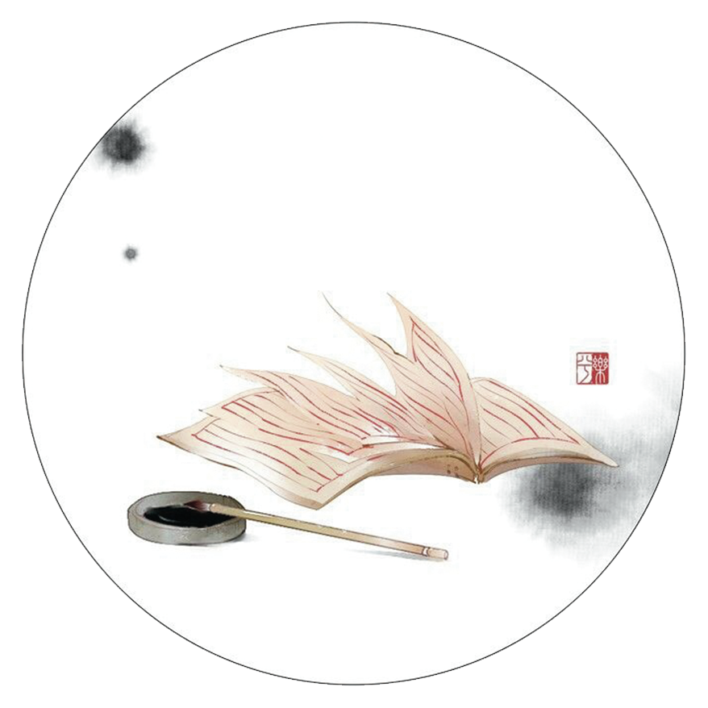

Jin Jun Mei Black Tea
Long Jing Green Tea
Anji Bai Cha
虽说茶道和古诗都是中国独一无二且博大精深的传统文化
然而它们并没有国界的源远流传着
有不少外国诗人用自己的语言歌颂着中国茶道
也有人将中文的茶诗翻译成别国语言
希望让全世界达到对中国茶道的了解和共鸣
妙的是 尽管没有翻译可以完全还原原作
但在每种语言的版本下
却有了不一样的韵味
然而它们并没有国界的源远流传着
有不少外国诗人用自己的语言歌颂着中国茶道
也有人将中文的茶诗翻译成别国语言
希望让全世界达到对中国茶道的了解和共鸣
妙的是 尽管没有翻译可以完全还原原作
但在每种语言的版本下
却有了不一样的韵味
Tea ceremony and ancient poetry are unique and profound traditional culture in China
However, their origin spreads and there are no national borders. Many foreign poets use their own language to sing Chinese tea ceremonies. Some also translate Chinese tea poems into other languages. They hope that the world will reach an understanding and resonance of Chinese tea ceremonies.
The wonderful thing is that although there is no translation that can completely restore the original, it has a different flavor under each language version.
However, their origin spreads and there are no national borders. Many foreign poets use their own language to sing Chinese tea ceremonies. Some also translate Chinese tea poems into other languages. They hope that the world will reach an understanding and resonance of Chinese tea ceremonies.
The wonderful thing is that although there is no translation that can completely restore the original, it has a different flavor under each language version.
Tie Guan Yin Oolong

Bi Luo Chun

Pu Erh Tea